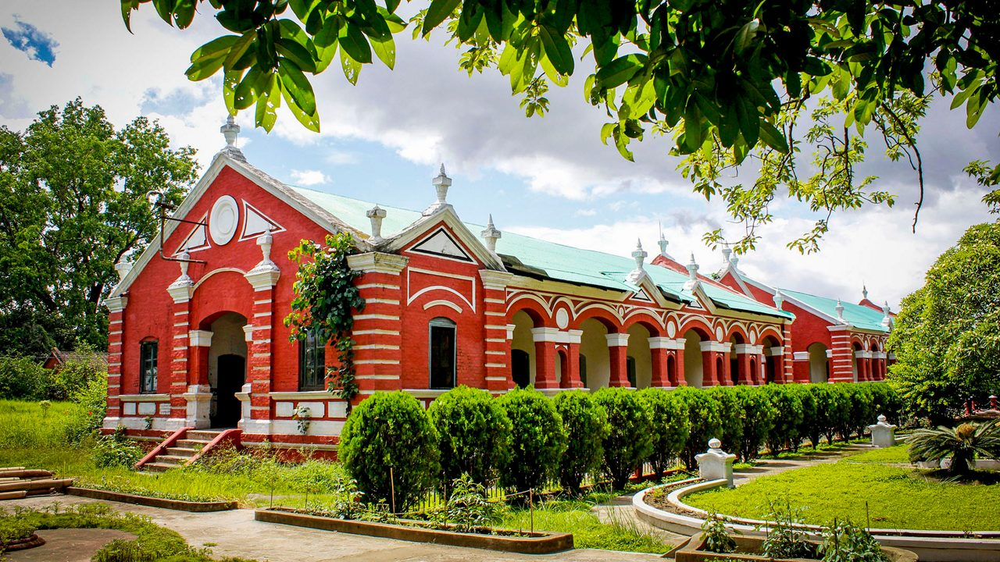
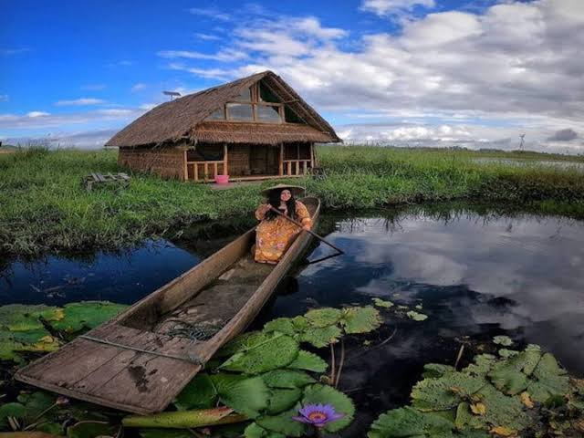
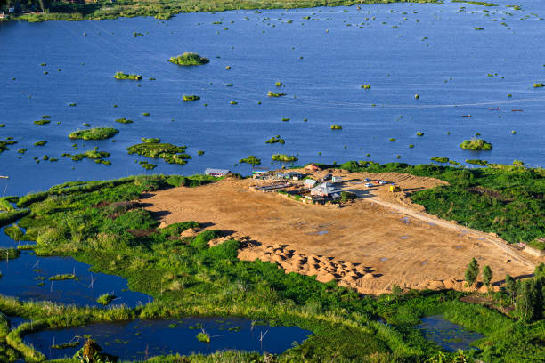
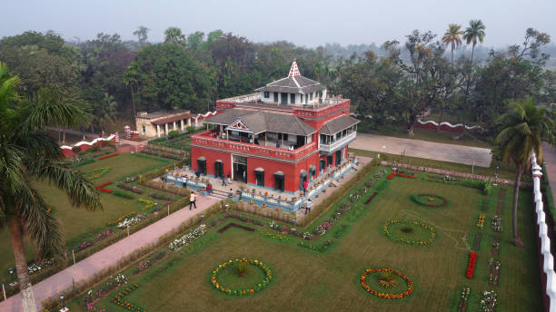
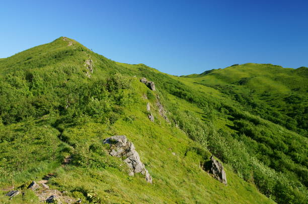

01
Imphal
The historic capital — famous for Ima Keithel (Asia's largest women-run market), Manipur State Museum, and World War II war cemeteries.

Discover the Jewel of India — home to the world's only floating national park on Loktak Lake, rare Shirui lilies, classical Raas Leela dance, and ancient martial arts.
Explore Manipur ↓Manipur is an enchanting valley surrounded by nine hill ranges, celebrated for its unique biodiversity, rich Meitei and tribal history, and the birthplace of modern polo (Sagol Kangjei).
From the ancient royal palace grounds of Kangla Fort and the all-women-run market of Ima Keithel in Imphal to the floating phumdis of Loktak Lake and the mist-shrouded heights of Shirui Hills, Manipur offers a poetic blend of nature and culture.
Floating lake sanctuaries, historic royal citadels, and mountain peaks across Manipur.

The historic capital — famous for Ima Keithel (Asia's largest women-run market), Manipur State Museum, and World War II war cemeteries.

The largest freshwater lake in Northeast India, famous for circular floating biomass islands (phumdis) and Keibul Lamjao National Park.

The ancient royal seat of Manipur's Meitei rulers situated on the banks of the Imphal River, preserving sacred shrines and moats.

A scenic mountain peak in Ukhrul district, famous as the exclusive natural habitat of the rare and endemic Shirui Lily (Kashong Timrawon).
Manipuri cuisine is fresh, aromatic, and organic — highlighting seasonal forest herbs, fermented fish (Ngari), fresh greens, and indigenous black aromatic rice.

One of India's classical dance disciplines, world-renowned for ethereal Raas Leela performances depicting the devotion of Radha-Krishna.
Vibrant spring festival of Yaoshang (celebrated with Thabal Chongba folk dance) and the grand annual Sangai cultural showcase.
Ancient Manipuri martial tradition combining sword (Thang) and spear (Ta) techniques with deep spiritual discipline.
Shaphee Lanphee and Wangkhei Phee handloom textiles, alongside unique black stone pottery crafted in Longpi village.
Discover all 28 states, local food specialties, and centuries of living traditions.
← Back to All States